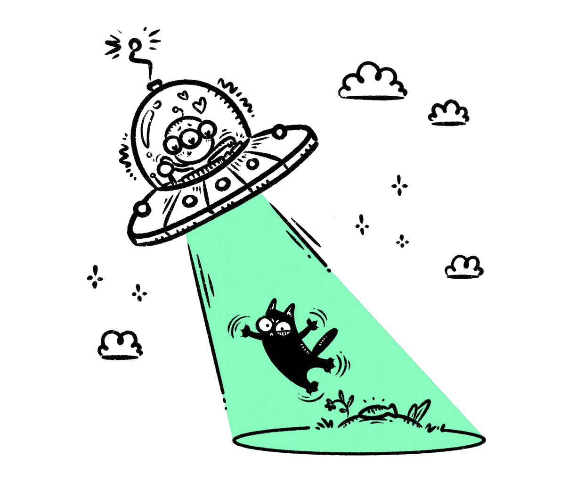
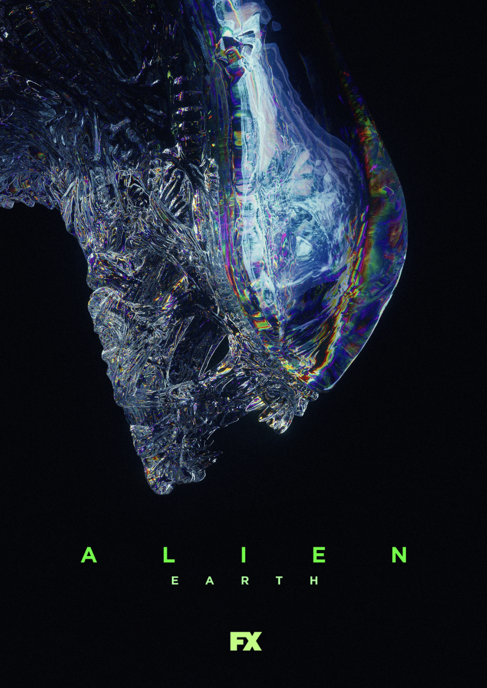
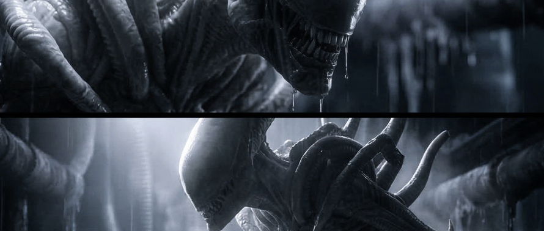
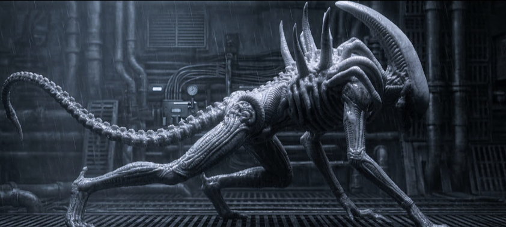
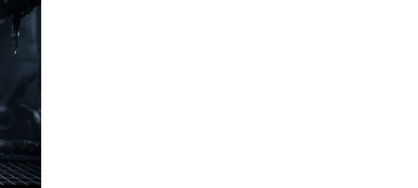
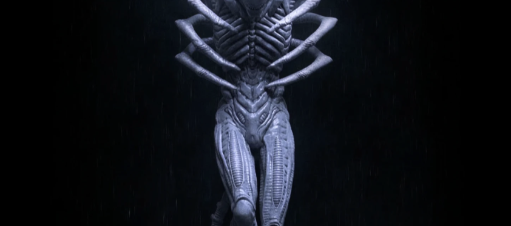

Science
Theory
Astrobiology, alien biology, extremophiles, habitable worlds.
↗Palo Alto High School
We meet at the edge of science, culture
and the unanswered.
01 / THE CLUB
Alien Study Club is a room for people who feel there is more to the universe than we currently know. We gather to learn, debate, watch, imagine — and follow the evidence wherever it goes.

SPECIMEN / 0102 / FOUR DIRECTIONS
Astrobiology, alien biology, extremophiles, habitable worlds.
↗Exoplanets, SETI, radio signals and technosignatures.
↗UAPs, Roswell, Area 51 — claims, evidence and appearance.
↗Ethics, philosophy, our future and the Dark Forest Theory.
↗03 / VISUAL ARCHIVE
SELECTED SIGNALS
FROM ANOTHER WORLD

FIELD IMAGE / 01




MINI TOPIC
There are billions of Sun-like stars. Many have planets. Some could be far older than Earth.
So where is everybody?
OPEN CASE →Working hypotheses
04 / JOIN THE SIGNAL
All levels of knowledge welcome. Bring a theory, a doubt, a strange fact, or simply your curiosity.
REQUEST ENTRY ↗THE TRUTH IS OUT THERE. 👽